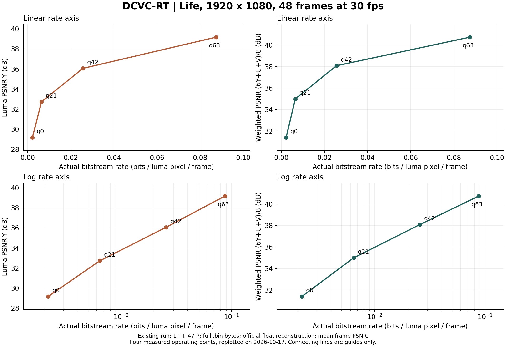

来源：research/video-coding-practice/dcvc_rt_study/DCVC学习笔记.md · 原始 Markdown
从已经跑通的 DCVC-RT 理解神经视频编码
整理日期：2026-10-17。本文接续学校集群上已经完成的实验，不要求把视频下载到本地。实验数字来自已有日志与码流核对；下面的图是对已有数据的重新整理，不是新跑的一轮 benchmark。
新增研究另见：第一轮统一评分与长链刷新、第二轮四档刷新 RD 与跨内容验证。本文主体保留原 48 帧实验的流程复盘；后续的 240 帧新实验、UF 实现分支和 UI²C 相关工作以各报告与精读笔记为准。
2026-10-18 补充：帧大小与缓冲需求、FM 参考状态与读流校验、自然视频刷新与 FM 下一阶段协议。
同步观看材料与评价补充见保存像素的时域核验：两段原图/q0/q63 同步视频、四时刻原尺寸裁剪、8 个已有点的 1920 条像素 PSNR 核对及时间曲线均已保存。实际 q 还包含固定 8 帧层级；相邻帧误差变化没有做运动对齐，不称闪烁评分，也没有将观看副本作为码率或 PSNR 来源。
新增人物片段的刷新对照：12 个新真实流点中，q21 的 reset64 相对关闭刷新，实际码率低约 50%、平均 PSNR-Y 高约 5.27 dB，说明改善参考状态在当前片段中可以同时降低后续编码成本并改善重建。匹配质量的 BD-rate 是另一种比较，见报告中的积分范围和边界；该单片段消融不代表 RT 对其他模型的收益。
新增现有码流独立解码与退化画面：同一q21两组前65帧保存像素完全一致，首次分叉在第65帧周期刷新；关闭刷新后段同时出现亮度与色度退化。480帧解码指标可复现，reset64完整重建哈希与旧文件一致。刷新单帧有比特开销，但本片段全片仍更省；内部特征漂移、概率尺度或数值问题的具体根因待只读观测，不能从现象直接认定。
新增内部状态和熵决策观测：只读观测保持480帧像素与四项浮点指标不变，未见所观测张量溢出或主潜变量尺度表顶格。关闭刷新后上下文RMS增大、后段需编码位置增加；“跳过位置”与“零值符号”应区分。范数偏移是线索，尚非根因证明。
新增固定I帧的P强制零消融：首I载荷和像素保持一致，只将P阈值0.12改为None，并使用匹配参数重新编解码。两个新点真实码率增加约2.6%，平均PSNR-Y只增加0.113/0.020dB，无刷新末段退化仍在。None关闭按尺度强制零及熵跳过，量化仍存在；更多位置参与熵编码也不代表比特数按位置数同比增加。本片段结果不支持将强制零视为主要解释，后续先做12帧精度配对预检。
新增精度诊断边界审计：在真实配对前发现量化中点、熵索引计算、融合参数与普通字典缓存的边界。源码Half round明确取偶，float普通round可能采用另一中点规则，需先测当前原生模块；不能把dtype切换自动视为只增加有效数字。63488个有限binary16位型的精确算术例子得到128个规则反例，尚非CUDA或视频实测。原语探针已准备，随后才做12帧整网；本轮连接不稳定，未提交GPU任务。
随后完成当前原生核的实际精度预检：同一个A100上，原生FP16对0.5/2.5输出0/2，FP32输出1/3；主与超潜变量均如此，标量和向量长度均已覆盖。与单纯改变有效数字相比，这还改变量化中点规则，后续整网结果须称精度路径比较。小型FP32算子调用通过；显式FP32掩码请求仍取回同一个FP16缓存，要求每臂用全新模型。这些是原语测量，不证明旧FP16视频退化来自精度混用或中点规则；本轮0视频帧。
新增当前精度路径的12帧真实编解码：2个新点、24帧、22对编码/解码参考特征逐位一致，FP16旧前缀复现；FP32使用相同half权重/输入取值扩大、相同CDF初始表，全新模型。共同FP32后处理的平均Y仅+0.008803dB、字节−0.18209%，保存uint8的U/V和611反而下降。不同评价对象不能混成“质量提高”；这0.2秒只证明短闭环可用，尚未解释长链退化，下一240帧协议已准备。实际控制器漏计子目录，已事后递归核实总量并准备后续修正，原始执行证据保留。
2026-10-19 新增240帧精度路径与刷新配对：2新流与2旧流共960条逐帧记录，478对新P参考逐位一致；FP32共同后处理平均Y仅+0.006454/+0.012590dB，末32帧Y略降，无刷新后段模糊和彩色条纹仍在。该条件下换当前FP32路径不足以消除长链退化；量化规则不同、两臂又都保留half取值权重，不能排除全部数值或训练/参考因素。保存uint8的U/V/611均值略降，下一项用现有流只读统一写出精度，分开后处理影响。原控制器扫描异常的监控空档如实保留，完整有效结果只恢复归档、未重跑。
2026-10-19 新增同一码流的输出保存精度诊断：四流只读解码960帧，旧像素/12评分完全复现、478对P参考核验。共同FP32写出uint8后，FP32−FP16平均611从−0.003851/−0.013928变成+0.008503/+0.016948dB；同一FP16张量约5%–7%的U/V采样降低一级。这里变的是保存步骤，输出不反馈参考，不能把小幅分数翻转理解为模型改进；原保存视频的评分仍有效，但不能全部归因模型输出差异。共同写出Y增益仍小、末段略降，长链根因仍待验证。下一项只准备固定FP32执行路径、比较原始P权重取值的12帧协议，未提交；本轮0新编码/0全YUV，监控正常返回0。
2026-10-19 新增固定FP32执行路径的原始P权重短测：CPU严格加载341个FP32张量，half改变20688914/20691456个参数值，RMS差约2.99e−5。只改初始P取值、保持P执行/CDF/输入和I相同，新增1I11P真实流，11对参考相等；共同uint8 Y/611为−0.006255/−0.005235dB，净增1字节。发布权重中存在更高精度取值，但本次短片未改善平均质量；12帧不能回答后段退化。末尾观测钩子错误把P解码帧也计入I引用，退出1的证据保留，完整结果仅CPU恢复、未重跑；首I完整浮点哈希配对未记录。后续修正筛选和落盘，原始P权重240帧协议仅准备。
先明确已经有什么
原实验使用 Xiph 的 life_1080p30.y4m 前 48 帧：1920×1080、30 fps、8 位 YUV420，总时长 1.6 秒。四个 DCVC-RT 码率点都包含 1 个 I 帧和 47 个 P 帧，并实际生成了 .bin 码流和重建 YUV。分享记录里还已有 RD 图，以及 libx264/libx265 的初步单点对照。
原始结果目录（需学校平台登录） · 整理后的指标、帧图和预览目录 · 分享记录
文件留在服务器即可。读论文、核对源码、统计指标、画图和查看重建效果，都可以在那里继续。下载只是制作离线副本的一种选择，不是分析的前置条件。首页的打包文件显示约 140 MB；此前“约 14 MB”的说法有误。
1. 先抓住四个模块的分工
| 模块 | 它解决的问题 | 为什么需要它 |
|---|---|---|
| 变换 | 把图像变成适合压缩的潜变量 y |
像素相关性强；学到的表示可以把重要结构集中到较少、较易预测的符号中 |
| 量化 | 把连续潜变量变成有限精度符号 | 真正丢弃一部分信息，换取更低码率；它决定不可逆失真 |
| 熵模型与熵编码 | 预测符号概率，并把符号写成可解码的比特串 | 越容易预测的符号越少占比特；概率模型本身不会恢复量化丢失的信息 |
| 时域参考 | 利用之前已经解码的内容 | 连续视频有大量重复信息；参考必须是解码器也能得到的重建内容 |
训练时常用的目标是 L = R + λD：R 是码率代价，D 是重建失真，λ 决定更愿意花比特还是容忍误差。训练中的概率估计码率与最终 .bin 文件大小要区分。本文的 RD 图使用真实码流文件大小。
理解它们时可以问四个问题：表示里装了什么？哪里丢了信息？这些符号为什么省比特？下一帧能继承什么？
2. 一帧 P 帧如何编码
源码分析固定在官方仓库版本 cbdae87a5445114cdc7f48816da63ea80bdeac40，主要入口是 DCVC-family/DCVC-RT/src/models/video_model.py 的 DMC.compress() 和 DMC.decompress()。本地保留了该版本源码与三篇论文；不要用“最新 main”替代固定版本解释已有实验。
2.1 从上一帧恢复上下文
apply_feature_adaptor() 从参考缓冲区取得信息。上一帧为 I 帧或发生特征刷新时，从重建图像经过 pixel_unshuffle(8) 和适配网络开始；普通 P 帧直接适配上一帧解码特征。
FeatureExtractor 产生两条分支：ctx 给条件编码器和条件解码器使用；ctx_t 进入时域熵先验。源码中的 q_feature 乘在 ctx_t 分支上，不能笼统理解成它缩放了所有上下文。
RT 的关键变化是：不再单独估计、压缩和传输光流，也没有传统显式光流 warping 链路。网络用参考特征和当前帧共同学习时间关联，称为隐式时域建模。它省去运动分支的运行、存储和传输代价，但仍然利用运动带来的可预测性；这不等于逐帧独立压缩。
2.2 条件变换得到主潜变量 y
当前帧先做 pixel_unshuffle(8)。这一步把空间位置搬到通道维，元素总数不变，本身没有压缩或丢弃信息。随后卷积网络把它与 ctx 拼接、变换，施加码率相关的通道增益，再下采样得到 y。
这不是先做一个固定的像素预测再编码 x−prediction。网络决定当前内容怎样依赖参考、哪些信息需要进入 y，解码网络也直接受相同上下文约束。因此这里的“条件编码”比固定像素残差更灵活。
对 1080p 实验，实际张量尺度如下（batch=1，通道在前）：
| 内容 | 形状 | 作用 |
|---|---|---|
| 原输入 | 3 × 1080 × 1920 |
从 YUV420 将 UV 上采样后形成三通道输入 |
| 补边输入 | 3 × 1088 × 1920 |
高度补 8 行，满足主网络的 16 倍数要求 |
| 主上下文/参考特征 | 256 × 136 × 240 |
大部分处理在 1/8 空间尺度进行 |
| 主潜变量 y | 128 × 68 × 120 |
真正需要量化和熵编码的主表示，空间尺度为 1/16 |
| 超潜变量 z | 128 × 17 × 30 |
用于描述 y 的分布，空间尺度约为 1/64 |
“在 1/8 尺度工作”指主要特征处理，不能把它误写成码流中 y 的尺度。降低大尺寸特征的处理次数，有利于减少访存和中间张量开销。
2.3 超先验：先发送描述分布的 z
hyper_encoder(y) 产生 z，量化后得到 z_hat。它的比特也要付费。解码器先从码流恢复 z_hat，再运行 hyper_decoder，得到描述当前 y 分布的信息。
为什么发送额外信息反而能省码率？因为一张图内不同区域的统计特征不同。如果少量 z 能让很多主符号的概率预测更准确，就可能使 R_z + R_y 小于不用超先验时的主码率。是否划算由训练中的联合码率代价决定。
RT 的 z 使用按码率参数选择的因子化概率模型；它不能免费访问尚未解码的 y。这个解码顺序约束是整个设计成立的基础。
2.4 时域、超先验、空间先验共同预测概率
res_prior_param_decoder(z_hat, ctx_t) 融合超先验和时域先验，生成局部量化尺度、Gaussian 的尺度与均值。时域先验来自过去的重建参考，双方可以自行计算，不需要重新传一份完整上下文。
P 帧的空间先验采用两阶段、空间与通道联合分组：两半通道使用互补棋盘格。先解码第一组；再利用第一组已经恢复的值更新第二组的均值和尺度；最后解码第二组。
这样可以利用同帧相关性，同时把依赖深度压到两阶段。相比逐位置自回归，它减少串行等待；相比完全独立编码，它保留一部分空间预测能力。这里的“两组”指潜变量符号分组，不是两半视频帧。
2.5 量化究竟发生在哪里
对一个 P 帧符号，可以用下面的简化公式理解源码（实际按上述分组执行）：
u = y / q_local
r = round(u − μ)
u_hat = r + μ
y_hat = q_local × u_hat
q_local 来自融合先验，源码限制它不小于 0.5。μ 与分组相应的概率模型一致。离散残差还会限制到 int8 的表示范围。超潜变量 z 也要取整和限制范围。
运行参数 force_zero_thres=0.12 还会对预测尺度很小的符号使用零残差规则。这有助于跳过几乎确定的零符号，降低处理开销，但属于实际编码规则，不能在复现实验时随意改变。
除了局部量化尺度，模型还有 q_encoder / q_decoder / q_feature / q_recon 等按码率选择的学习参数，分别调制不同模块。它们不是一个通用标量步长，也不能一律当成互为倒数。
本实现的基本 qp 从 0 到 63，数值越大通常质量和码率越高。这与常见 H.264/H.265 的 QP 方向不同。P 帧还会按层级使用 [0,8,4] 的偏移，所以码流中出现大于 63 的实际 qp 可以是正常现象。
2.6 从概率到真正的码流
量化后的残差用离散 Gaussian 概率建模。连续密度需要在整数符号对应的单位区间积分，形成离散概率，再转换成有限精度的 CDF 表。官方扩展使用 rANS 编解码器；解码端必须使用一致的 CDF、符号次序和分组规则。
程序按依赖先处理 z，再处理两组主符号。最终 .bin 还包含图像尺寸、帧类型、qp、SPS 与负载长度等信息。不能只统计主潜变量的理论熵，也不能把预览 MP4 的大小当作 DCVC-RT 码率。
概率越尖锐，模型越确信某个符号会出现，理想码长越短。但如果预测错了，实际出现的符号反而可能更费比特。因此“更复杂的熵模型”是否值得，要同时看预测收益与串行、访存、调用成本。
2.7 编码端也要恢复参考
编码器用 y_hat 和相同 ctx 运行条件解码器，恢复下一帧要用的特征。这样编码端不会拿原始帧特征作为解码端根本无法获得的参考。
RT 普通 P 帧编码主要保留重建特征，可以跳过最终的图像生成网络；特征刷新等情况再生成必要的重建图像。这也是编码端与解码端耗时不能只按“对称网络”推测的原因。
3. 解码端按什么顺序运行
- 读帧头、qp 和必要的 SPS，从码流恢复
z_hat。 - 从上一帧的解码参考重建
ctx_t等上下文。 - 融合超先验和时域先验，得到第一组概率与局部量化尺度。
- 解码第一组符号；用它更新第二组概率；解码第二组。
- 恢复
y_hat，运行条件解码器和图像生成网络，输出当前重建帧。 - 保存当前重建特征/图像，供下一帧使用；输出与评价时裁去补边。
解码器没有当前原始帧，也不能先知道尚未解码的符号。检查任何先验是否合理，都可以问：它的输入在解码到这一步时是否已知？
首个 I 帧由独立 DMCI 图像模型编码，没有时域参考；它使用四阶段空间先验。不要把 P 帧两阶段结构套用到所有帧。
4. 参考、刷新与长序列
RT 的 DPB 最多保存一个参考项，但这个特征通过递归可以包含更早的历史；“一个参考项”不等于“只利用一帧的全部历史信息”。
持续传播特征能保留有用信息，也可能积累误差、偏离训练分布。特征刷新时，网络从上一帧重建图像重新提取参考特征，缩短特征传播链。它仍然依赖之前解码的图像，不是插入新 I 帧，也不提供独立随机访问点。
test_video.py 的 reset_interval 默认是 32；README 示例显式设置为 64。不能仅凭默认值或不完整的命令记录倒推旧实验配置。2026-10-17 的新增对照表明：本轮 reset_interval=64 的前 48 帧，在基本 qp=21/42 下同时复现了旧实验的浮点 PSNR 与完整码流 bpp；默认 32 的结果则不同。旧短片段的实际行为与 64 设置吻合，最终刷新位置仍应读取原码流的 use_ada_i。仅有 48 帧也不足以唯一确定所有大于片段长度的刷新周期。
源码条件是 frame_idx % reset_interval == 1：周期 32 的刷新位置为零起始索引 1、33、65……；周期 64 为 1、65、129……。首次刷新与从 I 帧初始化特征的路径等价，因此本轮关闭刷新与周期 64 在第 65 帧之前的逐帧 PSNR 完全一致。先前按默认值推断旧短实验为周期 32 的表述已更正。
真正研究长期误差累积需要更长序列。现在这段 48 帧视频不足以证明长序列稳定性。
5. 已有四档实验怎样读
下表的 bpp 根据完整 .bin 文件字节数重新计算，包含码流头。PSNR 来自原官方测试日志，先逐帧算，再求 48 帧平均。
| 基本 qp | 文件字节数 | bpp | kbps（30 fps） | PSNR-Y / dB | PSNR-(6Y+U+V)/8 / dB |
|---|---|---|---|---|---|
| 0 | 27,139 | 0.00218131 | 135.695 | 29.1540 | 31.3987 |
| 21 | 80,051 | 0.00643414 | 400.255 | 32.7216 | 34.9920 |
| 42 | 318,442 | 0.02559494 | 1,592.210 | 36.0538 | 38.0786 |
| 63 | 1,087,507 | 0.08740893 | 5,437.535 | 39.1663 | 40.7282 |

原服务器 rd_curve.png 的纵轴数值对应 6:1:1 加权 PSNR。这里另外单列亮度 PSNR，并同时提供线性与对数码率轴，便于观察低码率区间。线段只是连接测得的四个点，不代表中间任意码率都已经测过。
最低到最高档，码率增加约 40 倍，亮度 PSNR 提升约 10 dB。后者表示几何平均意义下的逐帧亮度 MSE 约缩小一个数量级；由于原指标是平均帧 PSNR，不能直接把它当成全序列总 MSE 的精确比值。越往高质量走，继续提升通常需要更多比特；具体斜率仍取决于内容和模型。
bpp、码率与压缩比
bpp = 8 × 完整码流字节数 / (宽 × 高 × 帧数)
kbps = 8 × 完整码流字节数 × fps / 帧数 / 1000
YUV420 每个亮度位置平均有 1.5 个 8 位样本，未压缩约 12 bit/pixel，但 bpp 的分母仍是 W×H×N，不是 1.5×W×H×N。补边不应扩大分母。预览视频是方便播放的二次封装/转换结果，不能用它的文件大小替代原 .bin。
PSNR 口径为什么会不一致
对 8 位样本，PSNR = 10 log10(255²/MSE)。至少要明确五件事：评价 Y 还是 RGB/YUV？怎样加权通道？先平均 MSE 还是先平均帧 PSNR？按浮点输出还是保存后的 8 位文件？有没有裁去补边？
官方 YUV 路径先在浮点重建上算各通道 PSNR，再作 (6Y+U+V)/8。这不是按 YUV420 样本数 4:1:1 合并 MSE 后求 PSNR。两个量可以各有用途，但不能混用。
官方存文件发生在评价之后：Y 会四舍五入到 uint8，UV 的保存路径会直接转换为 uint8。因此对保存后的文件重算，数值会与官方浮点结果有小差别。例如基本 qp=63，官方 PSNR-Y 为 39.1663 dB，保存后重算约 39.1203 dB；不能据此直接判断码流损坏或解码错误。
整理目录另有按保存后 YUV 计算的结果。与传统编码器比较时，应对所有方法的实际解码输出使用同一个评价脚本与同一聚合口径。
6. 重建效果怎样看
在线帧图目录 包含原视频和四档重建的第 0、23、47 帧。预览目录 保留了原图和四档的播放版本。直接在学校平台查看即可。
已在线对照第 23 帧的最低和最高码率重建：最低档动画人物的面部、柜台后的瓶架等细节明显平滑，但柜台、人物、地板等大结构仍然可辨；最高档的蓝色背景纹理、瓶架和人物细节更丰富。该判断来自浏览器缩放预览，不能当作像素级误差测量，也不能证明时间稳定性。
观看时建议固定同一帧、同一裁剪位置、相同缩放和色彩转换，重点看人物轮廓、细线、瓶架、地板边缘等区域。播放时再看细节是否闪烁、运动边缘是否拖尾；静态截图不能证明时间稳定性。不要仅凭“看起来更锐”判断更忠实，锐化也可能生成与原图不同的细节。
这次预览使用与官方变换一致的 full-range BT.709 约定；评价仍在 YUV 域完成。对照不同播放器时，先排除 limited/full range、色彩矩阵和缩放方式的影响。
已有传统编码器对照的边界
分享记录中已有 libx264、libx265 的 medium, CRF=26，关闭 B 帧、长 GOP 的初步测试。每种只有一个码率点；相同 CRF 不代表相同质量或相同码率，不能直接据此得出模型优劣排序。
旧 compare_psnr.py 的通道和帧聚合口径需要与官方日志分别核对；在完成统一评分之前，这些数值不合并进上面的官方 RD 曲线。正式比较还要补齐各方法多个质量点、使用相同源帧和评价脚本。不要把 x264/x265 的 CPU 时间与 A100 上神经模型的 GPU 时间直接称为公平速度比较。
本次没有计算 BD-rate。它需要两条在质量区间内充分重叠的多点曲线，约定插值和积分方法；仅有一个基线点不够。48 帧、单个动画片段也不能支撑论文数据集层面的结论。
7. 为什么 DVC、DCVC、DC、FM、RT 走不同路线
| 模型 | 时域利用方式 | 表示/概率模型的关键变化 | 主要设计取向 |
|---|---|---|---|
| DVC（2019） | 显式光流编码、运动补偿 | 编码运动与像素预测残差，联合训练 | 把传统运动补偿框架中的关键模块换成可学习网络 |
| DCVC（2021） | 仍有显式运动，用重建参考构造高维上下文 | 条件编码/解码与条件熵模型，超越固定像素相减 | 提高表示能力与率失真性能 |
| DCVC-DC（2023） | 显式运动、传播特征、多样化上下文 | 分组偏移/融合，四阶段时空通道相关的潜变量概率建模 | 更充分地利用上下文，减少预测与概率估计误差 |
| DCVC-FM（2024） | 保留运动分支与特征传播，加入周期性刷新 | 按质量调制特征与量化，扩大单模型可用质量范围 | 让一个模型覆盖更宽码率，并改善长链预测的适用性 |
| DCVC-RT（2025） | 去掉显式运动分支，以参考特征隐式建模 | 单一低分辨率主特征处理、P 帧两阶段概率模型、码率相关模块参数、系统级实现优化 | 把率失真收益与真实运行延迟、访存开销一起优化 |
DVC → DCVC：为什么不只编码像素残差
像素差固定了表示形式：即使预测只出现一点位移误差，也可能产生复杂残差。DCVC 让编码器和解码器同时看到高维上下文，学习怎样表达“参考已经解释了什么、还缺什么”。但 DCVC 2021 仍然有显式运动，不能把 RT 的“无显式光流”归给最早的 DCVC。
DCVC → DC：为什么要多样化上下文
运动遮挡、局部运动、对齐误差会让单一上下文不可靠。DC 通过更丰富的对齐和融合提升参考质量，也利用更多潜变量之间的相关性来估计概率。多个偏移并不意味着每个偏移都作为独立运动码流发送；一部分是由已解码运动和特征推导得到的。
增加上下文能省比特，也会增加特征存储、模块调用和依赖步骤。因此它适合在率失真优先的目标下权衡，不能只从网络 FLOPs 推算实际速度。
DC → FM：为什么一个模型要支持宽码率
每个质量点训练一套模型会增加存储与部署成本；只调整输出量化步长又可能使内部特征分布失配。FM 用质量相关的特征调制，让各模块随目标质量一起适配，并结合更长序列训练与参考特征刷新处理实际视频中的长预测链。
全局调制与局部量化控制互补：前者调整模型工作的质量范围，后者适应当前内容不同位置和通道。不能把 FM 简化成“只把一个量化参数改了”。
FM/DC → RT：为什么可以舍弃显式运动
显式运动对齐能提升预测，尤其对大位移可能有价值；代价是运动估计、运动编解码、warping 和中间特征的完整链路。RT 把这部分代价换成隐式条件网络，在端到端时延目标下取得不同平衡。
同样，RT 把 P 帧的复杂空间概率依赖压到两阶段，使 GPU 计算、CPU 熵编码和数据传输更容易安排。它还使用算子融合和流/事件调度，降低访存及调用开销。实时化依赖架构与系统实现共同配合，不只是减少参数量。
论文还讨论了整数化部署。当前实验代码使用 .half() 的浮点推理；潜变量以 int8 表示，不等于整网都已经整数化，也不能据此宣称已经验证跨硬件逐比特一致。
这些模型不是沿同一目标的单调升级：DVC 建立可学习混合编码框架，DCVC/DC 提高条件表示与上下文能力，FM 强化单模型宽码率及长序列适用性，RT 面向真实端到端速度重新取舍模块。
8. 对照源码的阅读顺序
以下链接固定到所分析的官方提交，行号以该版本为准。
| 先看什么 | 入口 | 阅读时要追的问题 |
|---|---|---|
| 整体数据和码流循环 | test_video.py | I/P 如何切换、实际 qp 如何选择、何时刷新、指标在保存之前还是之后计算？ |
| P 帧编码/解码 | video_model.py: DMC | 编解码双方参考是否一致、哪些数据必须发送、哪些网络可以并行？ |
| 条件变换与参考分支 | video_model.py: FeatureExtractor | ctx 与 ctx_t 去哪了，1/8 与 1/16 分别指什么？ |
| 两阶段空间模型 | common_model.py: compress_prior_2x | 第二组为什么必须等第一组、掩码如何跨通道交错？ |
| 概率模型与 rANS 接口 | entropy_models.py | Gaussian 怎样变成离散 CDF、极小尺度符号怎样跳过？ |
| I 帧差异 | image_model.py | 为什么这里是四阶段，并且没有时域先验？ |
| 文件大小与帧头 | stream_helper.py | 统计中有没有包含 SPS、帧头和长度字段？ |
阅读论文时先对应 RT Fig.4 和第 3 节，再读 DC Fig.2、FM Fig.2/3；比对同一职责的模块，比逐年记网络名字更有效。
9. 下一轮真正有信息增量的小实验
现有四档测试无需重跑。若继续做实验，优先选择能回答明确问题的变化：
- 评价口径实验：固定同一码流，分别用官方浮点结果和保存后的 YUV 评价；统一对 x264/x265 解码输出评分，解释差异来自哪里。
- 特征刷新实验：使用足够长的相同片段，比较禁用刷新、32、64 间隔；画逐帧 PSNR/bpp，观察刷新附近和序列后段，而不只看平均值。
- 内容实验：分别选静态、平移/大运动、场景切换片段，固定模型参数与帧数；考察隐式时域建模在哪些情况下更划算。
- 完整对照 RD：为每个基线补多个码率点，统一 I/P 结构和保存后评分，再考虑重叠区间内的 BD-rate。
本轮已完成的证据与仍需补充的证据分开：四档真实码流与平均指标已存在；在线静帧能确认空间细节变化；时间稳定性、长序列误差、跨内容平均性能与公平速度结论仍需相应实验，不能从这 48 帧外推。
参考材料
- Li et al., Towards Practical Real-Time Neural Video Compression（DCVC-RT, CVPR 2025），本地保留 arXiv v2。
- Li et al., Neural Video Compression With Diverse Contexts（DCVC-DC, CVPR 2023）。
- Li et al., Neural Video Compression with Feature Modulation（DCVC-FM, CVPR 2024）。
- Li et al., Deep Contextual Video Compression（DCVC, NeurIPS 2021）。
- Lu et al., DVC: An End-to-End Deep Video Compression Framework（CVPR 2019）。
- 微软官方源码固定版本；Xiph 视频源目录。
研究延伸：参考融合、训练长度与编码端适配（2026-10-19）
继续比较模型时，应同时看表示能力、训练分布和计算预算。DCMVC把像素导出的上下文与传播特征结合，论文消融还显示长序列训练本身的贡献；不能只把完整收益归给结构。DCVC-DT在编码端搜索潜变量，保留解码器，但这不代表端到端实时。方法、消融边界和固定源码路径见新精读笔记。
对三段已有真实流的事后整段周期选择分析中，32/64候选相对固定64的三段汇总节码率仅约0.0561%，且插值敏感性同样很小。它是选题筛查，不是已编码的新策略。后续研究先比较相同目标帧在连续历史/跨场景历史下的行为，再判断参考控制或新内容处理是否值得改进，见研究报告。